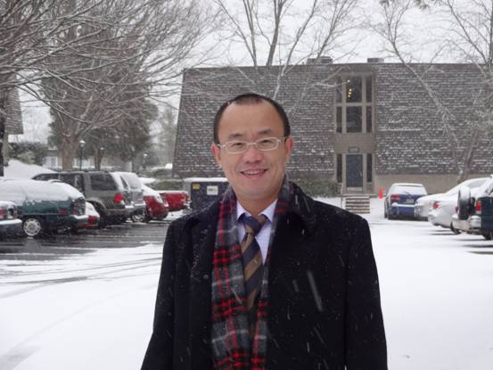

公告4

2010年8月27日，会计学院第五届院务委员会第一次会议（扩大会议）在大连香洲花园商务楼第一会议室召开。会议由会计学院院长方红星教授主持，会计学院领导班子及学院中层干部参加了此次会议。 会议讨论了设立会计学院青年教师科研启动基金的议案，设立该项基金目的在于改变我院目前高水平科研成果、高层次科研项目薄弱的现状，鼓励青年教师能够深入挖掘科研课题、长期在某一领域从事研究。会议就资助对象的年龄限制、申报条件、申报程序、评审标准等多个方面展开了讨论，并就设立该项基金达成了共识。 会议还讨论了会计学院科研管理体制改革问题，指出我院科研管理体制方向为“管研分开”，即科研管理和科研机构的运作分开。 会上，主管院长还分别通报了我院教学方面的几个问题和与香港大学合作项目的相关情况。另外，会议还就会计学院民主管理相关问题进行了讨论。
2010年8月27日，会计学院第五届院务委员会第一次会议（扩大会议）在大连香洲花园商务楼第一会议室召开。会议由会计学院院长方红星教授主持，会计学院领导班子及学院中层干部参加了此次会议。 会议讨论了设立会计学院青年教师科研启动基金的议案，设立该项基金目的在于改变我院目前高水平科研成果、高层次科研项目薄弱的现状，鼓励青年教师能够深入挖掘科研课题、长期在某一领域从事研究。会议就资助对象的年龄限制、申报条件、申报程序、评审标准等多个方面展开了讨论，并就设立该项基金达成了共识。 会议还讨论了会计学院科研管理体制改革问题，指出我院科研管理体制方向为“管研分开”，即科研管理和科研机构的运作分开。 会上，主管院长还分别通报了我院教学方面的几个问题和与香港大学合作项目的相关情况。另外，会议还就会计学院民主管理相关问题进行了讨论。